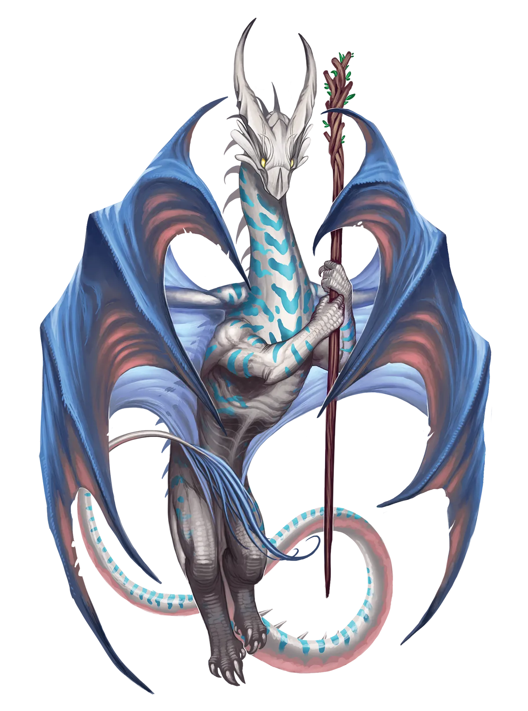
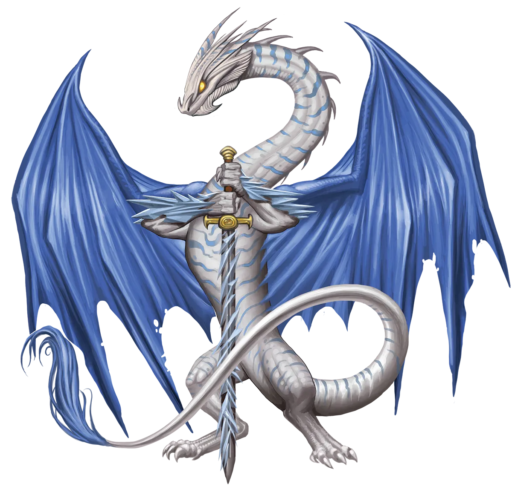

失乐园
自以为是的传统主义天堂龙类相信，光恒仪式会使龙类，尤其是它们的同族，失去某种珍贵、难以言喻且不可替代的东西。荒谬至极！这与那种导致一些人盲目固守旧途而非采用最有效方法的不安和执迷如出一辙。
乐园龙 Paradise Dragon |
|
|
天堂龙类寻求创建坚不可摧的庇护所，以保护盟友、驱逐敌人。通常，天堂龙类能抵御其区域内的危险，但这取决于它们与其他居民相比的相对实力。当天堂龙类感知到远超出其当前能力的敌人逼近时，光恒仪式是一个自然的选择。恒光天堂龙类在得知威胁逼近后迅速执行仪式，使自己有时间严格遵守冒险和英雄气概的日程安排，以便加速成长。虽然这使它们偏离了惯常的模式转向攻势，但这一切都是为了抵御迫在眉睫的灾难、保卫区域的追求。但传统主义的天堂龙类并不这样认为。它们觉得恒光天堂龙类变得野性难驯，未经深思熟虑便贸然踏上征途，而非坚守正道。如果预测的灾难比预期来得更早，而恒光天堂龙类甚至更无力阻止呢？比起天堂龙类坚守岗位、牺牲自己以限制损害并为他人争取逃脱时间，可能会造成远为巨大的破坏。或者更糟的是，如果危险从未降临，仪式岂非徒劳？对传统派来说，变数实在太多了，它们认为永光龙类行动过于草率。恒光天堂龙类则鄙视那种认为正确的选择是接受失败、牺牲自己、努力减轻损害的想法，而它们选择的道路却很有可能彻底阻止威胁。最大化最坏情况与改善预期结果这两种哲学几乎无法调和，因此天堂龙类在威胁解除后仍会长时间争论不休。最终结果如何对论据几乎无关紧要，因为根据观点未获结局支持的那一方，这个单一案例不过是轶事而已。 为了以足够快的速度进阶以阻止逼近的威胁，恒光天堂龙类需要在战略意义上转向攻势，积极追寻任务并克服将其魔法推向极限的挑战。然而，在战术层面上，它们仍更倾向于以防守方式处理每项任务和战斗，集结盟友并一丝不苟地保护盟友免受伤害，有条不紊地攻占敌人据点的一寸一尺，并尽量降低失去任何同伴的风险。这促使它们与志同道合的冒险者群体集结，成为盟友坚定的护卫魔。虽然天堂龙类对愿意为善良事业而努力的人十分宽容，但对任何在队伍中制造不和、让私人恩怨蔓延到战场上的人却缺乏耐心。失去冷静、违背计划行动会增加所有人的风险，甚至使最简单的任务变得致命。恒光天堂龙类强烈偏好防御良好且能帮助它们保护盟友的职业。虽然圣武士勇士是显而易见的选择，但其他选项包括战士和武僧，甚至能提供间接守护如治疗者或具备战场控制和墙壁法术的施法者等职业。 失乐园 自以为是的传统主义天堂龙类相信，光恒仪式会使龙类，尤其是它们的同族，失去某种珍贵、难以言喻且不可替代的东西。荒谬至极！这与那种导致一些人盲目固守旧途而非采用最有效方法的不安和执迷如出一辙。 乐园龙特质 Paradise Dragon Traits 你出身于一脉高举正义旗帜的守护者――乐园龙世系。 |
  |